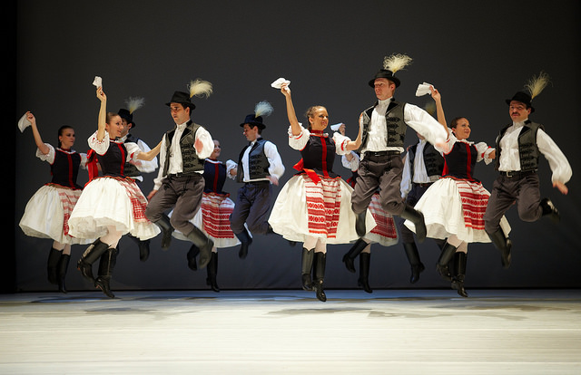

Угорщина має довгу і багату історію, яка розпочалася більше тисячі років тому. Королівство
Угорщина було засноване близько першим королем Іштваном I.
Протягом століть країна була частиною великих імперій, включаючи Австро-Угорщину.
Одним із ключових етапів в історії Угорщини стала османська окупація у XVI столітті, що
тривала понад 150 років. Цей період мав значний вплив на політику і культуру країни.
"Незважаючи на численні виклики, Угорщина завжди зберігала свою національну ідентичність і культурну
спадщину."
Культура Угорщини
Культура Угорщини відома своїм багатством у музиці, мистецтві та літературі. Серед видатних угорців –
композитор Ференц Ліст, чия музика залишається популярною і сьогодні. Народні традиції,
такі як музика і танці, залишаються живими у сучасній культурі.

Традиційні угорські народні танці на святі культури.
Угорська мова є однією з найстаріших мов Європи, а УАН активно
працює над її збереженням.
Туризм в Угорщині
Серед туристичних напрямків найбільш популярним є столиця країни, Будапешт, що відомий своєю
архітектурою та термальними джерелами. Інші популярні туристичні місця включають озеро Балатон
та національні парки Угорщини.
Будапешт – архітектурна перлина Європи
Озеро Балатон – найбільше прісноводне озеро в Європі
Національні парки та термальні джерела
Економіка Угорщини
Економіка Угорщини базується на промисловості, сільському господарстві і
туризмі. Одним із найважливіших секторів є автомобілебудування, яке представлено такими
компаніями, як Audi, Mercedes-Benz і Suzuki.
Станом на , економічне зростання залишається
стабільним, а рівень безробіття — на історично низькому рівні.